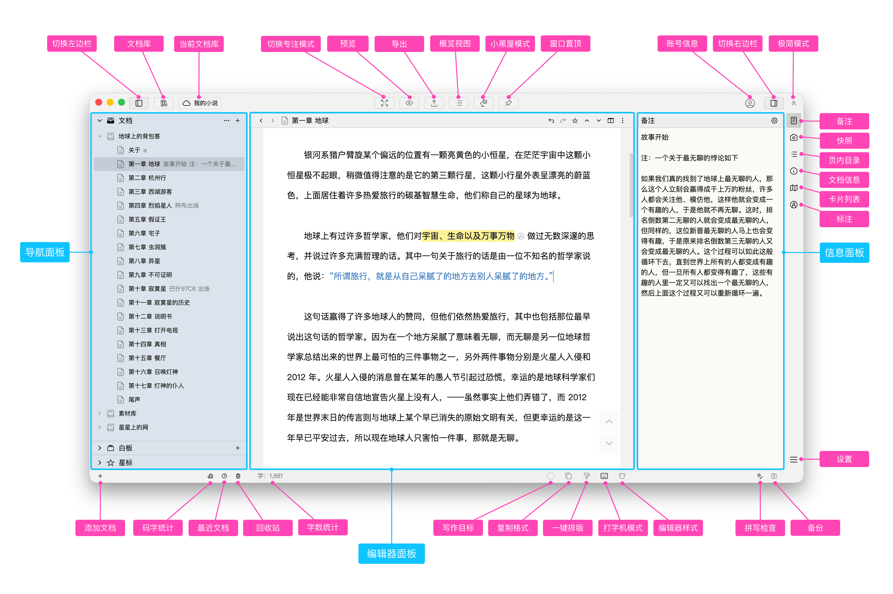

WonderPen 到底值不值得掏钱？一个用了半年的付费用户给你算明白
免费版够不够用？Pro 和 Pro+ 差在哪？从轻度写手到职业作者，分三档把这笔账算透。
妙笔 WonderPen 到底值不值得掏钱？我从去年底在官网第一次看到它就被吸引住了，蹲了三个月试用、最终咬咬牙上了 Pro，身边至少五个朋友问过我值不值。今天把这笔账给你算透——免费版给什么、付费版多什么、分三档人逐条对照，最后给你一个三秒能对号入座的结论。
先把功能账摊开
WonderPen 的版本线我花了小两周才摸清楚——它不像有些软件只分免费和付费两档，它有三个层级，每个层级在几个核心维度上做了明确的切分。我直接从WonderPen文档里摘出来对写作最关键的几项，别跟那些花里胡哨的参数混在一起。
第一个维度：文档快照保留。 这是我最在意的一项。基础版本地快照无限保留，但云端快照只留 7 天；Pro 版提到 30 天；Pro+ 版给 90 天。别小看这个数字——你连续写了三周的长篇，某天同步冲突被云端覆盖，基础版用户只能认栽（除非你刚好做了手动备份），Pro 用户能回退到一个月前任何一个版本，Pro+ 能拉回三个月。
第二个维度：白板卡片数量上限。 基础版没写具体数字，但 Pro 版明确标了 500 张/白板。我自己的体验是，超过 300 张以后编辑器会开始掉帧，500 这个上限其实是性能保护而不是硬性锁。如果你写长篇小说、要给每个人物和伏笔都建卡，这个上限迟早会碰。
第三个维度：Excalidraw 画板。 这是一个纯 Pro 独占的功能——手绘画复杂图表、人物关系网、时间线草图，不用去别的软件画完再截图回来粘。基础版和非 Pro 用户没有这个选项。
其他功能比如多窗口模式、窗口置顶、快照对比、三重恢复机制（回收站 + 快照 + 自动备份），文档里没写版本限制，应该是全版本都有。这部分 WonderPen 还算厚道——基础版不是阉割到不能用的那种，而是给你一套完整的写作工具链，只是在几个关键时刻给你设了上限。
下载 WonderPen之后第一眼就是这个主界面，左边文档库、右边白板和卡片、底部快照面板，这套布局我用了半年没觉得需要换。

分三档人算账
功能摆在那里，但值不值完全看你怎么用。下面按使用强度分三档，我把每档的决策逻辑给你掰清楚。
轻度用户：免费版真的够用
如果你写东西是"想起来写两笔"的状态——一个月更新三五篇，每篇两三千字，不写长篇，不用白板建卡，那免费版你可以一直用下去，完全不用掏一分钱。
免费版能给你的：单文档编辑、编辑器内切分、基础白板（七种卡片除了 Excalidraw 都有）、本地无限快照、自动备份、高亮卡片。这套东西用来写个人博客、公众号短文、笔记整理，功能上没有硬伤。
唯一可能让你觉得"差点意思"的地方是云端快照只有 7 天——但轻度用户的产出频率低，就算丢了也只是一篇短文，重写半天就回来了。这个风险你得自己评估。
主力用户：Pro 是这笔钱花得最值的选项
如果你是周更以上、持续输出的状态——写连载、长文专栏、产品文档，每天打开 WonderPen 至少两三个小时，那 Pro 版值得你掏钱。
算时间账：Pro 版给你的不是某个单点功能，而是三个关键地方的"安全感升级"。云端快照从 7 天变 30 天，意味着你之前三周的任何一次修改都能精准回退——这对写长文的人来说是刚需，你不会想经历"好不容易写了五千字，同步冲突被覆盖，回收站只有昨天那版"的崩溃。
白板 500 张上限——主力用户写长篇时，人物卡、伏笔卡、设定卡加起来两三百张很正常，基础版如果哪天偷偷加了上限你会被卡得很难受。Pro 直接给 500，省得你天天盯着数量担心。
Excalidraw 画板——这个功能单拎出来说。主力用户需要可视化的东西太多了：小说作者画人物关系网、产品经理画流程图、教程作者画步骤线。如果每次都要切去 Excalidraw 官网或 App 画完再截图回来粘，一天浪费至少十五分钟。Pro 直接在白板里就能画，画完拖进来就是卡片，点击还能编辑，效率差一个量级。
Pro 版到底多少钱？我当时是按年订阅的，折算下来每月几十块。你自己算：每周省下半小时的同步恢复、截图搬运、找素材的时间，一年下来省下的时间至少值几倍的订阅费。这笔账不会算错。
重度用户：Pro+ 得看你的风险承受能力
Pro+ 只在一个维度上比 Pro 多东西：云端快照从 30 天涨到 90 天。其他功能和 Pro 完全一样。
这就意味着，Pro+ 值不值，完全取决于你能不能接受"三个月前的历史版本可能找不回来"这个风险。
我自己没上 Pro+，说实话有点抠门。但如果你写的是全职工作级别的东西——比如签约作者正在赶稿的长篇、公司内部的产品文档库、不能重写的采访记录——那 90 天的快照备份是值得的。三个月内任何一次误操作、同步冲突、文件损坏，你都能拉回干净版本。这种情况下多花的那点钱，换的是"我不怕丢"的心理安全感。
如果你已经上了 Pro 但还在纠结要不要升 Pro+，问自己一个问题：我过去三个月内，有没有因为"文件丢了"而真的慌过一次？ 答案是"有"就升，"没有"就继续用 Pro。
不付费的替代方案
聊完付钱的选项，再说不付钱的路。
第一条路：把免费版用到底。前提是你能接受云端快照只有 7 天的风险，并且养成手动备份的习惯——每月拉一次本地库做个额外备份就行了，用不了五分钟。这个方案适合轻度用户和主力用户里特别抠门的那拨人。
第二条路：换别的免费工具。候选有 Obsidian（纯本地、插件多但白板和快照要自己搭）、Notion（协作强但写作体验不如 WonderPen 专注）、typora（够轻但没有多窗口和白板）。每换一个都要重新建立习惯成本，你得自己掂量"省下一笔订阅费"能不能覆盖迁移成本。
第三条路：半逃票策略——主力用免费版，只有到了快照卡满、白板不够的时候临时买一个月 Pro 救急，用完就取消。技术上可行，但我不推荐：订阅取消后 Pro 功能会锁定，如果你在 Pro 期间用 Excalidraw 画了重要图表，取消后读不出来就麻烦了。
结论：三秒对号入座
最后给你一个可以直接用的决策表：
- 闭眼上 Pro：周更以上、持续写、每天打开两小时以上、接受几十块/月的支出——这是最常见的"值得"档位，我自己就是这个档。
- 再等等：月更三五篇、写短文为主、不确定会不会坚持超过三个月——先用免费版摸两个月，摸出感觉了再升。
- 永远不用付：只写随笔、日记、零星笔记，一个月打开不超过十次——免费版的功能你用不完，花钱纯属浪费。
至于 Pro+，它是给"已经在吃 WonderPen 饭的人"准备的——你靠它产出的内容能换钱，那 90 天快照就是最基本的风险对冲；否则 Pro 已经够好了。